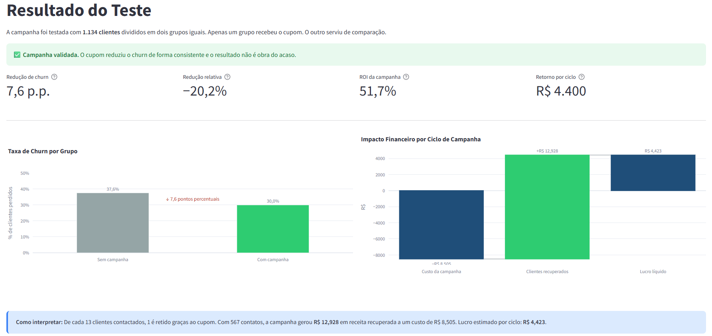
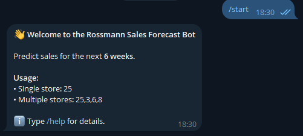
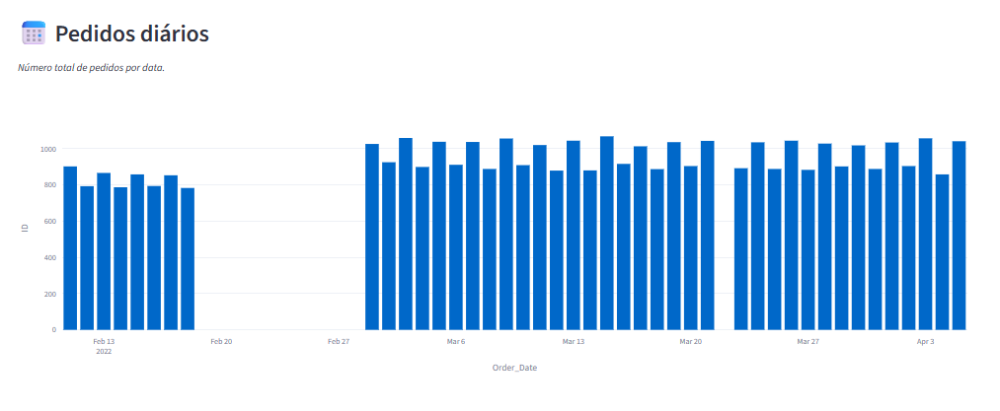
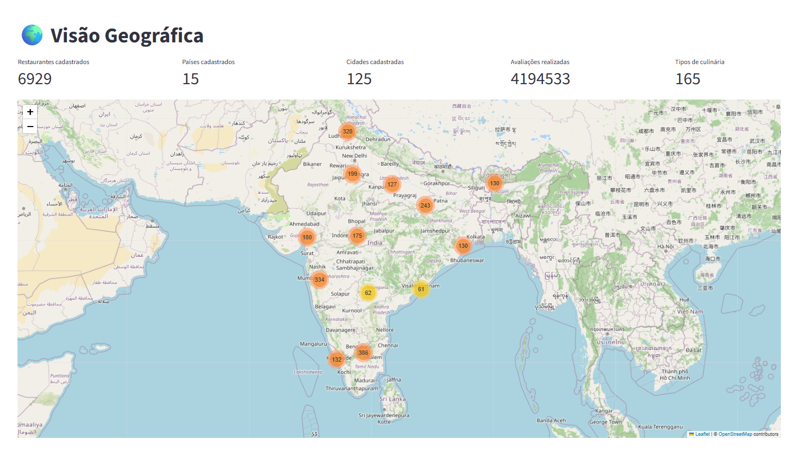
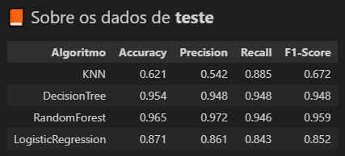

Projetos
Uma seleção de projetos de Machine Learning end-to-end, da análise exploratória ao deploy em produção, com integração real a ferramentas de negócio.

Churn + A/B Testing + Uplift Modeling
Pipeline de retenção de 3 camadas: churn prediction, teste A/B e uplift modeling.
- ROC-AUC 0,776 no teste de churn
- ROI de 51,7% por ciclo, validado com A/B (p=0,008)

Customer Value Segmentation
Pipeline end-to-end de segmentação de clientes com deploy em AWS.
- 35 clientes VIP identificados (24% da receita)
- Deploy completo em AWS (EC2, S3, RDS)

Rossmann Sales Forecast
Previsão de vendas com XGBoost e Optuna, consultável em tempo real.
- Previsão para mais de 1.000 lojas
- API em produção com bot no Telegram

Health Insurance Cross-Sell Ranking
Modelo de ranking para priorização comercial em cross-sell de seguros.
- Ranking de propensão para priorização comercial
- Deploy via API com integração ao Google Sheets

Marketplace Delivery Dashboard
Painel gerencial interativo para monitoramento de KPIs operacionais.
- KPIs operacionais de delivery em tempo real
- Painel interativo publicado no Metabase

Global Restaurant Analytics
Dashboard interativo com análise global de restaurantes Zomato.
- Mais de 6.900 restaurantes mapeados globalmente
- Segmentação por país, cidade e tipo de culinária

Machine Learning Models Evaluation
Estudo comparativo de algoritmos de classificação, regressão e clusterização.
- Comparação entre 4+ algoritmos por tipo de problema
- Análise de métricas e trade-offs entre modelos